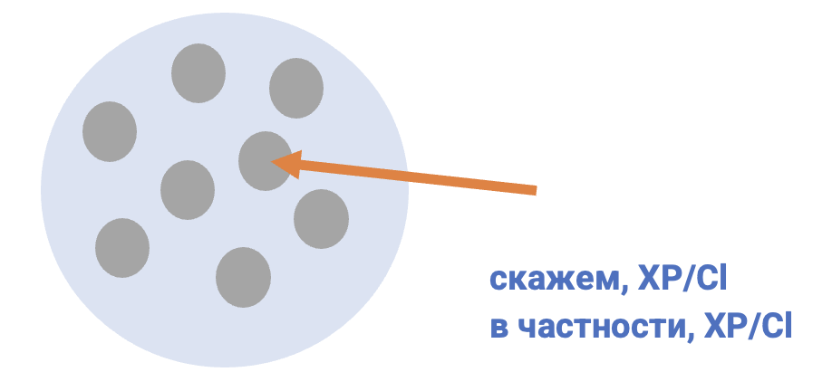

| ID | Construction | Illustration |
|---|---|---|
| 1841 | например, XP/Cl | Например, в Финляндии запретили курить везде в общественных местах. |
| 1840 | к примеру, XP/Cl | Вот, к примеру, мне нравится Мерилин Монро. |
| 2350 | так, Cl | Кошки намного хуже нас видят цвета. Так, красный цвет им недоступен. |
| 2349 | скажем, XP/Cl | Вариантов предлагается множество. Скажем, японская модель образования. |
XP = phrase (фраза)
Cl = clause, sentence (предложение)
Русский конструктикон содержит информацию обо всех конструкциях урока
https://constructicon.github.io/russian/
1. Медицина бывает платной и бесплатной. В России, __________________, медицина бесплатная.
2. Чтобы хорошо себя чувствовать, нужны разные вещи. __________________, здоровый сон.
3. У всех бывают вредные привычки. __________________, я раньше много курил.
4. На этой неделе Нина сидит дома. Вчера, __________________, она не пошла на работу из-за высокой температуры, а в понедельник — из-за давления.
5. Мне нужен пластырь. Давай куда-нибудь зайдём! __________________, в аптеку или в магазин.
Образец:
Я обожаю домашних животных. Так, у меня дома живут кот, черепаха и рыбки.
1.
а. Сфера моих интересов обширна. Так, …
б. У меня не так много интересов. Так, …
2.
а. Я обожаю спорт. К примеру, …
б. Я не фанат спорта. К примеру, …
3.
а. У меня активная жизнь. Так, …
б. У меня не очень активная жизнь. Так, …
4.
а. Я очень люблю путешествовать. К примеру, …
б. Я не очень люблю путешествовать. К примеру, …
| в частности, XP/Cl Они занимались ремонтом техники, в частности холодильников. English ‘They worked with equipment repair, in particular refrigerators.’ Norwegian ‘... for eksempel / spesifikt ...’ |
скажем, XP/Cl Вариантов предлагается множество. Скажем, японская модель образования. English ‘There can be many options. Let’s take for example the Japanese model of education.’ Norwegian ‘... for eksempel / la oss si ...’ |
| Обе конструкции вводят пояснение некоторого общего утверждения с помощью
конкретного частного примера. В качестве примера описывается целая ситуация или
называется её элемент.  |
|
| Конструкция в частности, XP/Cl часто подчёркивает принадлежность приведённого примера к некоторому множеству. | Конструкция скажем, XP/Cl часто вводит пример как гипотетически возможный. |
| Both constructions introduce an explanation of a general assertion by presenting a specific concrete example. The example usually describes an entire situation or names one of its elements. | |
| This construction в частности, Cl/XP emphasizes the fact that the given example belongs to a certain set. | The construction скажем, Cl/XP often presents an example as hypothetically possible. |
| Begge konstruksjoner introduserer en nærmere forklaring på en generell påstand ved hjelp av et konkret, spesifikt eksempel. Eksempelet beskriver som regel en hel situasjon eller nevner et element av den. | |
| Konstruksjonen в частности, Cl/XP fremhever det anførte eksempelets tilhørighet til en gitt mengde. | Konstruksjonen скажем, Cl/XP presenterer ofte eksempelet som noe hypotetisk mulig. |
Образец:
На деловую встречу лучше надеть что-то строгое,скажем, рубашку и брюки.
| на вечеринку на деловую встречу на пляж в спортзал на природу/в поход в пустыню в лес зимой в музей в офис на улицу в дождь в театр на ужин с друзьями |
лучше надеть что-то | необычное удобное строгое тёплое прохладное яркое солидное непромокаемое красивое лёгкое комфортное обычное повседневное праздничное дорогое практичное |
скажем, | галстук шарф юбка пиждак свитер джинсы шорты брюки дождевик рубашка шуба пальто костюм платье халат блузка плащ футболка пижама спортивный костюм тёмные очки перчатки варежки шапка шляпа кепка бейсболка |
Образец:
В одежде я консервативный. Скажем,, я никогда не ношу рубашку без галстука.